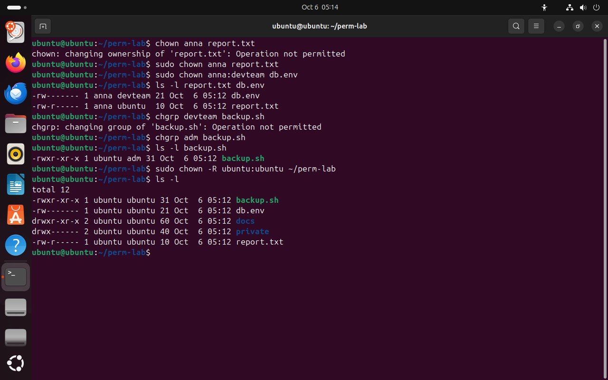

Часть 4 из 7
Владелец и группа: chown и chgrp
В этой части сменим владельца и группу файлов, разберём, почему владельца меняет только root, и когда обычному пользователю разрешено сменить группу.
4.1 Кто может сменить владельца
Команда chown (change owner) меняет владельца файла, а с записью владелец:группа — владельца и группу сразу. Команда chgrp (change group) меняет только группу. Обе принимают ключ -R: изменить каталог и всё его содержимое.
Сменить владельца может только root, поэтому chown выполняют через sudo. Если бы любой мог передать свой файл другому, можно было бы подбросить файл от чужого имени. Квоты места на диске тоже считаются по владельцу, и передача файлов позволила бы обойти ограничение.
Группу файла владелец может сменить сам, командой chgrp, но только на группу, в которой состоит сам. Пользователь ubuntu входит в группу adm и может отдать файл ей, а в группе devteam его нет, и такая смена запрещена.
| Действие | Кто может | Пример |
|---|---|---|
| сменить владельца | только root | sudo chown anna report.txt |
| сменить владельца и группу | только root | sudo chown anna:devteam db.env |
| сменить группу | владелец — на свою группу; root — на любую | chgrp adm backup.sh |
| сменить для каталога целиком | то же с ключом -R | sudo chown -R ubuntu:ubuntu ~/perm-lab |
Пример из практики. Разработчик скопировал файлы сайта через sudo cp, и все они стали принадлежать root. Веб-сервер работает от имени www-data и не может записать загрузки пользователей. Исправляют одной командой: sudo chown -R www-data:www-data /var/www/site/uploads.
chown anna report.txt# без sudoчто делает
Что делает команда. Пытается сменить владельца report.txt без sudo; обычному пользователю это запрещено.
По частям:
chown- сменить владельца (и группу) файла
anna- новый владелец
report.txt- какой файл или каталог (путь относительно текущего каталога)
sudo chown anna report.txt# новый владелецчто делает
Что делает команда. С правами root делает anna владельцем report.txt.
По частям:
sudo- выполнить команду от имени другого пользователя, по умолчанию root
chown- сменить владельца (и группу) файла
anna- новый владелец
report.txt- какой файл или каталог (путь относительно текущего каталога)
sudo chown anna:devteam db.env# владелец и группачто делает
Что делает команда. С правами root делает anna владельцем db.env, а devteam — его группой.
По частям:
sudo- выполнить команду от имени другого пользователя, по умолчанию root
chown- сменить владельца (и группу) файла
anna:devteam- новый владелец anna и группа devteam
db.env- какой файл или каталог (путь относительно текущего каталога)
ls -l report.txt db.envчто делает
Что делает команда. Выводит строки двух файлов с новыми владельцами.
По частям:
ls- вывести содержимое каталога
-l- подробный список: права, владелец, группа, размер
report.txt- что показать (путь относительно текущего каталога)
db.env- что показать (путь относительно текущего каталога)
chgrp devteam backup.sh# ubuntu не в devteamчто делает
Что делает команда. Пытается отдать backup.sh группе devteam, в которой ubuntu не состоит.
По частям:
chgrp- сменить группу файла
devteam- новая группа
backup.sh- какой файл или каталог (путь относительно текущего каталога)
chgrp adm backup.sh# ubuntu в группе admчто делает
Что делает команда. Отдаёт backup.sh группе adm, в которой ubuntu состоит.
По частям:
chgrp- сменить группу файла
adm- новая группа
backup.sh- какой файл или каталог (путь относительно текущего каталога)
ls -l backup.shчто делает
Что делает команда. Выводит строку backup.sh с новой группой.
По частям:
ls- вывести содержимое каталога
-l- подробный список: права, владелец, группа, размер
backup.sh- что показать (путь относительно текущего каталога)
sudo chown -R ubuntu:ubuntu ~/perm-lab# вернуть всё ubuntuчто делает
Что делает команда. Возвращает владельца и группу ubuntu каталогу ~/perm-lab и всему его содержимому.
По частям:
sudo- выполнить команду от имени другого пользователя, по умолчанию root
chown- сменить владельца (и группу) файла
-R- сменить владельца каталога и всего содержимого
ubuntu:ubuntu- владелец ubuntu и группа ubuntu
~/perm-lab- какой файл или каталог (путь от домашнего каталога)
ls -lчто делает
Что делает команда. Выводит подробные строки файлов текущего каталога: тип, права, владельца, группу, размер и дату.
По частям:
ls- вывести содержимое каталога
-l- подробный список: права, владелец, группа, размер
- 1обычный пользователь не меняет владельца
- 2после sudo chown: владелец anna, у db.env и группа devteam
- 3ubuntu не состоит в devteam
- 4группа adm: ubuntu в ней состоит
- 5chown -R вернул владельца всему каталогу


Весь снимок ↗chown без sudo запрещён, chgrp разрешён только на свою группу.
Что показывает снимок. Без sudo chown запрещён; root сменил владельца и группу; chgrp разрешён только на группу adm, в которой ubuntu состоит; chown -R вернул всё ubuntu.
Где это пригодится. После копирования файлов через sudo их владельцем становится root; chown -R возвращает файлы пользователю или службе, например www-data.
Итоги части 4
chown владелец файл,chown владелец:группа файл— сменить владельца, только черезsudo.chgrp группа файл— владелец файла может выбрать только группу, в которой состоит.- Ключ
-Rменяет владельца или группу каталога со всем содержимым. - Владельца меняет только root: так нельзя подбросить файл от чужого имени и обойти квоты.
В отчётСнимок с chown и chgrp и объяснение двух отказов Operation not permitted.